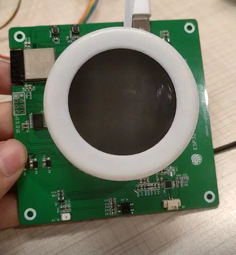

ESP32 Smart Knob Controller
A precision-engineered smart home rotary controller featuring Matter protocol compliance and sub-millisecond response times. Complete with advanced encoder processing, gesture recognition, and intuitive tactile feedback for seamless smart home integration.
Project Overview
The ESP32 Smart Knob represents a breakthrough in tactile smart home control, combining precision hardware engineering with sophisticated firmware development. This project showcases the convergence of traditional user interface paradigms with modern IoT protocols, delivering an intuitive rotary controller that bridges the gap between physical interaction and digital home automation.
As Lead Firmware Engineer, I architected a complete Matter-compliant ecosystem featuring sub-millisecond encoder response, advanced gesture recognition, and seamless cross-platform integration. The solution supports real-time tactile feedback, adaptive control algorithms, and enterprise-grade security, making it suitable for both consumer and commercial smart building applications.
Beyond serving as a practical smart home controller, this project provides a comprehensive reference framework for developers building next-generation human-machine interfaces in IoT environments. The component architecture abstracts complex encoder processing, wireless protocols, and user experience design into reusable, well-documented modules.
View project on GitHubESP32 Smart Knob - Matter Integration
A comprehensive smart home rotary controller solution combining custom hardware design with advanced firmware development. The ESP32 Smart Knob delivers intuitive, tactile control for smart home devices through a precision-engineered rotary interface with full Matter protocol compliance.
This project demonstrates professional-grade engineering practices in embedded systems, wireless protocols, and user interface design, serving as both a practical smart home controller and a comprehensive reference implementation for developers building Matter-compliant rotary control interfaces.
My Key Contributions
Engineered hardware interrupt-driven quadrature decoding with 4x resolution enhancement and noise rejection algorithms for sub-millisecond response times.
Implemented complete Matter 1.0 compliance including Level Control cluster, secure commissioning, and cross-platform interoperability with major smart home ecosystems.
Developed deterministic control algorithms with dual-core FreeRTOS architecture and hardware-accelerated PWM for responsive tactile feedback systems.
Established secure OTA update mechanism, factory provisioning system, and comprehensive testing framework for enterprise deployment readiness.
Contributed to PCB specifications, GPIO optimization, and signal integrity validation through comprehensive hardware-firmware integration testing.
Implementation & Highlights
How it works (high level)
- Physical rotation detected by encoder → hardware interrupt processing → gesture recognition algorithm → Matter command generation → secure transmission to target devices → visual/haptic feedback display.
- Dual-core FreeRTOS design: Core 0 handles encoder processing and control algorithms while Core 1 manages wireless communication and user interface to maintain deterministic response times.
- Thread/Wi-Fi mesh networking with device attestation certificates and encrypted command processing, ensuring secure smart home integration without compromising performance.
- Adaptive control algorithms with acceleration-based gesture recognition, enabling intuitive interaction patterns from precise adjustments to rapid scrolling based on user intent.
- Graceful degradation: offline operation mode, automatic network recovery, and local device memory for maintaining functionality during connectivity issues.
Notable engineering decisions
- Hardware interrupt-driven encoder processing over polling to achieve sub-millisecond response times with minimal CPU overhead.
- Dedicated hardware timer for PWM generation ensuring deterministic LED feedback timing independent of network or processing loads.
- Component API designed for minimal integration complexity — init, configure, onRotation, onPress — enabling rapid deployment in diverse applications.
For complete technical documentation and implementation examples, see the resources linked below.
Smart Home Applications
The ESP32 Smart Knob provides intuitive rotary control for a wide range of smart home devices and scenarios, offering precise tactile feedback and seamless Matter integration across all major ecosystems.
Lighting Control
Precise brightness, color temperature, and hue adjustments with smooth rotary interaction and visual feedback.
Climate Control
Intuitive thermostat adjustment with precise temperature increments and mode switching capabilities.
Audio Systems
Volume control, track navigation, and equalizer adjustments with acceleration-based scrolling.
Window Coverings
Precise positioning control for smart blinds and curtains with positional feedback.
Scene Management
Cycle through and activate different smart home scenes with contextual visual indicators.
Media Control
Timeline scrubbing, playback speed control, and media navigation with gesture recognition.
The device's advanced gesture recognition and configurable interaction patterns make it adaptable to virtually any control scenario requiring precise, intuitive input.
Technologies & Languages
Programming Languages
Frameworks & Platforms